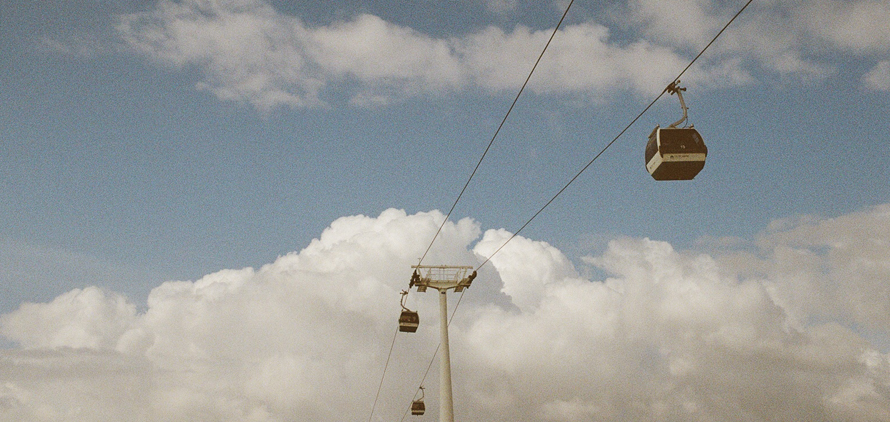

Lisabona

Par Lisabonu
Lisabona ir lielākā pilsēta Portugālē un tās galvaspilsēta. Šī pilsēta ir novietota uz septiņiem pakalniem un tajā mīt vairāk nekā pusmiljons iedzīvotāju. Lisabonā novērojami spilgti kontrasti starp vēsturisko un mūsdienīgo, apvienojot dažādas kultūras, trendus un dzīvesveidus.
Leģenda vēsta, ka Lisabona, tāpat kā Roma, dzimusi starp septiņiem pakalniem. Šie pakalni bija São Roque, São Jorge, São Vicente, Santo André, Santa Catarina, Chagas un Sant'Ana pakalns. Šie pakalni joprojām ir svarīgi pilsētas punkti, par kurus apvij neskaitāmi dzejoļi un dziesmas, kas sarakstīti par Portugāles galvaspilsētu.

Lisabonas koordinātas: 38°42'49.75''N 9°8'21.79''W. Pilsēta ir novietota Težu upes grīvā, un tā ir kontinentālās Eiropas vistālāk uz rietumiem esošā galvaspilsēta. Pieminekļiem un apkaimēm bagātā Lisabona piedāvā dažādas iespējas atklāt un izbaudīt plašo dabas, vēstures un kultūras mantojumu.
Kultūras pieminekļi kā Sv. Džordža viduslaiku pils, viduslaiku katedrāle, Belemas tornis, Džeronimo klosteris, Nacionālais panteons, pils laukums un vecpilsētas centrs ir tikai daži no Lisabonas tūrisma objektiem, kas aizrauj tūkstošiem apmeklētāju no visas pasaules.
Piecas lietas, kas obligāti jāpaspēj paveikt, kamēr esi Lisabonā
- Uzkāpt Belemas tornī
- Apciemot Okeanāriju
- Izbraukt ar 28.tramvaju
- Paēst Time Out tirgus placī
- Izklaidēties Lx Factory

Vai zināji, ka ... ?
- Pastel de Nata recepte ir rūpīgi glabāts noslēpums;
- Fado mūzikas žanrs nāk tieši no Lisabonas;
- Viena ceturtā daļa Portugāles iedzīvotāju mīt Lisabonas metropoles apgabalā;
- Leģenda vēsta, ka Odisejs dibinājis Lisabonu;
- Eksistē 365 veidi, kā pagatavot mencu!
Lisabonas karte
Atpakaļ uz sākumu ↑